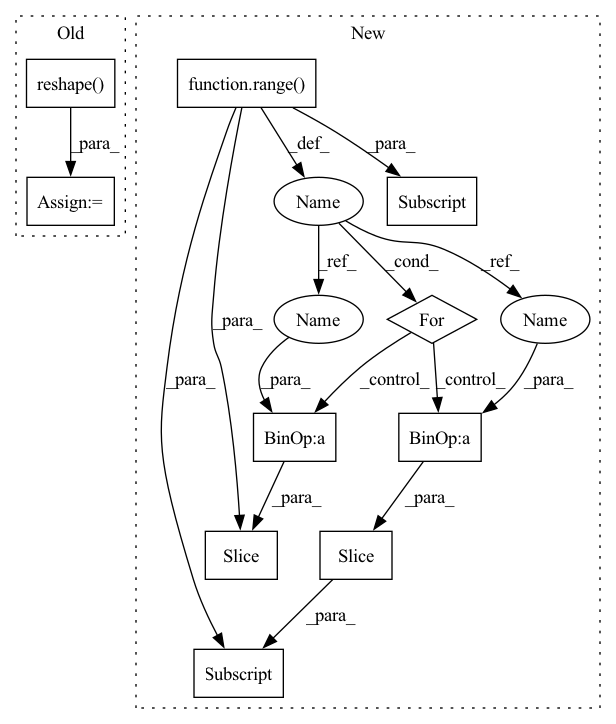

Pattern ID :20570

Before Change
bs,_,oy,ox = grad_output.shape
x, w = ctx.saved_tensors
cout,cin,H,W = w.shape
tw = w.reshape(cout, -1)
ys,xs = ctx.stride
dx, dw = np.zeros_like(x), np.zeros_like(w)
for Y in range(grad_output.shape[2]):
After Change
rcout = cout//ctx.groups
dx, dw = np.zeros_like(x), np.zeros_like(w)
for g in range(ctx.groups):
tw = w[g*rcout:(g*rcout+rcout)].reshape(rcout, -1)
for Y in range(grad_output.shape[2]):
for X in range(grad_output.shape[3]):
iY,iX = Y*ys, X*xs
gg = grad_output[:, g*rcout:(g*rcout+rcout), Y, X]
tx = x[:, g*cin:(g*cin+cin), iY:iY+H, iX:iX+W].reshape(x.shape[0], -1)
dw[g*rcout:(g*rcout+rcout)] += gg.T.dot(tx).reshape((rcout,cin,H,W))
dx[:, g*cin:(g*cin+cin), iY:iY+H, iX:iX+W] += gg.dot(tw).reshape(dx.shape[0], cin, H, W)
return dx, dw
register("conv2d", Conv2D)
In pattern: SUPERPATTERN
Frequency: 3
Non-data size: 10
Instances
Fragment ID: 66377333
Project Name: geohot/tinygrad
Commit Name: 2c7e75d7333d6498b54209ab28bb54ba251e99f3
Time: 2020-10-30
Author: 72895+geohot@users.noreply.github.com
File Name: tinygrad/ops.py
M Class Name: Conv2D
N Class Name: Conv2D
M Method Name: backward(2)
N Method Name: backward(2)
M Parent Class: Function
N Parent Class: Function
M File Name: tinygrad/ops.py
N File Name: tinygrad/ops.py
M Start Line: 180
M End Line: 191
N Start Line: 183
N End Line: 195
'>
Before Change
bs,_,oy,ox = grad_output.shape
x, w = ctx.saved_tensors
cout,cin,H,W = w.shape
tw = w.reshape(cout, -1)
ys,xs = ctx.stride
dx, dw = np.zeros_like(x), np.zeros_like(w)
for Y in range(grad_output.shape[2]):
After Change
rcout = cout//ctx.groups
dx, dw = np.zeros_like(x), np.zeros_like(w)
for g in range(ctx.groups):
tw = w[g*rcout:(g*rcout+rcout)].reshape(rcout, -1)
for Y in range(grad_output.shape[2]):
for X in range(grad_output.shape[3]):
iY,iX = Y*ys, X*xs
gg = grad_output[:, g*rcout:(g*rcout+rcout), Y, X]
tx = x[:, g*cin:(g*cin+cin), iY:iY+H, iX:iX+W].reshape(x.shape[0], -1)
dw[g*rcout:(g*rcout+rcout)] += gg.T.dot(tx).reshape((rcout,cin,H,W))
dx[:, g*cin:(g*cin+cin), iY:iY+H, iX:iX+W] += gg.dot(tw).reshape(dx.shape[0], cin, H, W)
return dx, dw
register("conv2d", Conv2D)
'>
Fragment ID: 66377334
Project Name: geohot/tinygrad
Commit Name: 2c7e75d7333d6498b54209ab28bb54ba251e99f3
Time: 2020-10-30
Author: 72895+geohot@users.noreply.github.com
File Name: tinygrad/ops.py
M Class Name: Conv2D
N Class Name: Conv2D
M Method Name: backward(2)
N Method Name: backward(2)
M Parent Class: Function
N Parent Class: Function
M File Name: tinygrad/ops.py
N File Name: tinygrad/ops.py
M Start Line: 180
M End Line: 191
N Start Line: 183
N End Line: 195
'>
Before Change
x = F.relu(fc(x))
x = self.dropout(x)
x = self.fc[-1](x) // (B*N, 1)
x = torch.reshape(x, (B, N)) // (B, N)
return x
After Change
if self.context > 1:
z = [x]
for d in range(1, self.context // 2 + 1):
z_u = torch.zeros_like(x)
z_u[:, d:, :] = x[:, :-d, :] // i-d
z.append(z_u)
z_d = torch.zeros_like(x)
z_d[:, :-d, :] = x[:, d:, :] // i+d
z.append(z_d)
x = torch.cat(z, dim=2) // (B, N, C*width)
'>
Fragment ID: 66377340
Project Name: keio-bioinformatics/mxfold2
Commit Name: c37c09d1ad2940a13dd4c82253c8607c8175115a
Time: 2019-11-06
Author: satoken@bio.keio.ac.jp
File Name: dnnfold/fold/layers.py
M Class Name: FCUnpairedLayer
N Class Name: FCUnpairedLayer
M Method Name: forward(2)
N Method Name: forward(2)
M Parent Class: nn.Module
N Parent Class: nn.Module
M File Name: dnnfold/fold/layers.py
N File Name: dnnfold/fold/layers.py
M Start Line: 117
M End Line: 123
N Start Line: 121
N End Line: 137